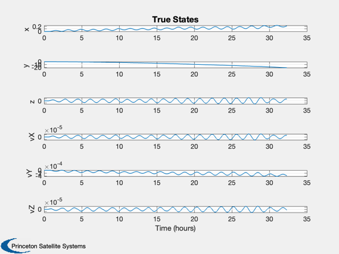
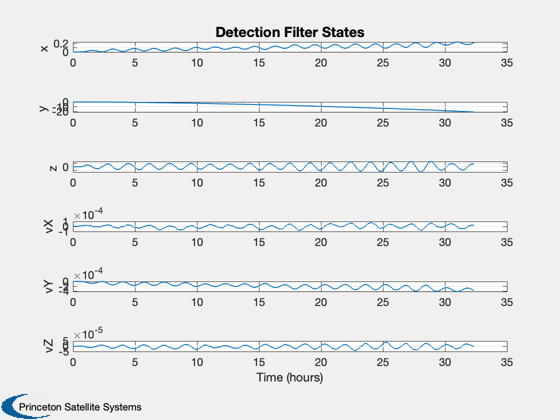
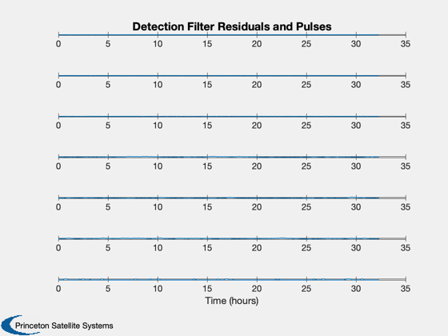

Demonstrate an orbit detection filter with random thrust pulses.
This filter will detect measurement failures and actuator failures. A single thruster is assumed and it is assumed that each measurement of x, y, z and velocity is independent.
Since version 10. ------------------------------------------------------------------------- See also @statespace/statespace.m, C2DZOH, CToD, Plot2D, TimeLabl, Unit, DetectionFilterBuild, DetectionFilterUnnormalized, LinOrb, Period -------------------------------------------------------------------------
Contents
%-------------------------------------------------------------------------- % Copyright (c) 2002 Princeton Satellite Systems, Inc. % All rights reserved. %--------------------------------------------------------------------------
Setup
if( exist('LinOrb') ) [a,b,c,d] = LinOrb( [], 1 ); else a = [ zeros(3), eye(3); diag([3 0 -1]), [0 2 0;-2 0 0;0 0 0] ]; end if( exist('Period') ) rNom = 7000; p = Period(rNom); else p = 5828.51668009113; % sec end nOrbits = 20; dT = 100; % Random pulse train; rand (0-1) is used with these thresholds to create pulses. uRandOn = 0.02; % threshold to start a pulse (rand < uRandOn) uRandOff = 0.1; % threshold to continue a pulse (rand > uRandOff) wo = 2*pi/p; dT = wo*dT; c = eye(6); d = zeros(6,1); bV = Unit([0;1;1]); b = [0;0;0;bV]; % Only one thruster pointing in an arbitrary, % Hill's equation fixed, direction. nSim = floor(nOrbits*p*wo/dT); % 4 years xPlot = zeros(12,nSim); rPlot = zeros(6,nSim); x = zeros(6,1); thrust = 0.001; % N mass = 100; % kg aMax = thrust*0.001/mass; % km/sec^2 uMax = aMax/wo^2; % km % Set up the state space model %----------------------------- states = {'x' 'y' 'z' 'vX' 'vY' 'vZ'}; inputs = {'u'}; outputs = states; g = statespace( a, b, c, d, 'Linear Orbit', states, inputs, outputs ); d = DetectionFilterBuild( g, -0.25 ); % Set up the detection filter %---------------------------- [aX, d.d] = C2DZOH( a, d.d, dT ); % Convert plant to discrete time %------------------------------- [a, b] = C2DZOH( a, b, dT ); d.g = CToD( g, dT, 'z' ); xE = x; % Add noise %---------- pos1Sigma = 10; vel1Sigma = pos1Sigma*wo; y1Sigma = [pos1Sigma*ones(3,1);vel1Sigma*ones(3,1)]*1e-3; % Convert to km bias = [1;1;1;wo;wo;wo]; bias = zeros(6,1); rD = zeros(6,1); u = zeros(1,size(rPlot,2));
Simulate
%--------- for k = 1:nSim xPlot(:,k) = [x;xE]; rPlot(:,k) = rD; yMeas = c*x + y1Sigma.*randn(6,1) + bias; [rD, xE] = DetectionFilterUnnormalized( d, yMeas, 0, xE ); % Create a random pulse train %---------------------------- if( k > 1 ) if( u(k-1) == 0 ) % initiate a new pulse if( rand < uRandOn ) u(k) = uMax; end else % extend an existing pulse if( rand > uRandOff ) u(k) = uMax; end end end x = a*x + b*u(k); end
Plot
% Convert velocity to km/sec %--------------------------- xPlot([4:6 10:12],:) = xPlot([4:6 10:12],:)*wo; % Generate reasonable time labels %-------------------------------- [t,tL] = TimeLabl( (0:(nSim-1))*dT/wo ); yL = {'x', 'y', 'z', 'vX', 'vY', 'vZ' }; Plot2D( t, xPlot(1:6,:), tL, yL,'True States','lin' ); Plot2D( t, xPlot(7:12,:), tL, yL,'Detection Filter States','lin' ); yL = {'x', 'y', 'z', 'vX', 'vY', 'vZ', 'u' }; Plot2D( t, [rPlot;u], tL, yL,'Detection Filter Residuals and Pulses' ); %-------------------------------------- % PSS internal file version information %-------------------------------------- % $Id: 5b6830dc2c1dd8a95cc4794c4e5738fd8725108a $  